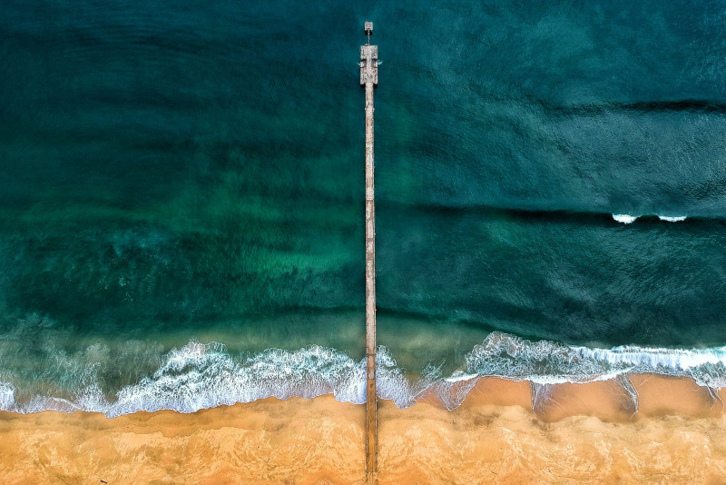

Static Site Experiment
2020-09-01

Welcome Back to the Lab!
I have been using Hexo.io for the last 3 years as my static site generator.
It worked well enough. But has a few flaws and limitations that prevented me from building the kind of site I really wanted.
Recently I decided to freelance again and needed to update this website to include a portfolio. So I decided to investigate other static site generators to accomplish this goal.
My Requirements
I wanted to use JavaScript as my development language and markdown for content. Because all my Hexo posts are in markdown. I knew it would be simple to copy the files over and make a few adjustments to get them working.
I wanted to convert an HTML and CSS site I'd built a couple of years ago to be the theme for my static site.
I needed my site to iterate over two separate lists of markdown posts and projects. Then display them respectively on a Blog page and a Portfolio page.
Each individual post and project needed to open in an individual page where I can write in-depth about a single topic or project.
With these requirements in mind I started looking for options.
I went to Static Site Gen and spent time researching a few JavaScript-based possibilities:
With this limited list, I was overwhelmed with the time-consuming complexity of getting up and running with these options. Most are add-ons to allow complex front-end libraries to output static sites. At the moment I don't need that level of engineering for my site.
However, Eleventy looked purpose built from the ground up to create static sites. Giving users the ability to pick whatever templating system works best for them. Anything that gives me more choices is great.
In my case Eleventy was deceptively simple. Which caused me issues because I was expecting more complexity which didn't exist.
However with the help of Bryan Robinson's 11ty YouTube Tutorial. And, help from friendly developers on GitHub. I was able to wrap my head around how it works under the hood.
Now I'm very happy with my current site. It works and performs the way I want.
I plan on using Eleventy for this site, other ideas, and client projects in the future.